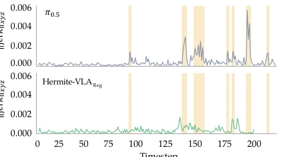
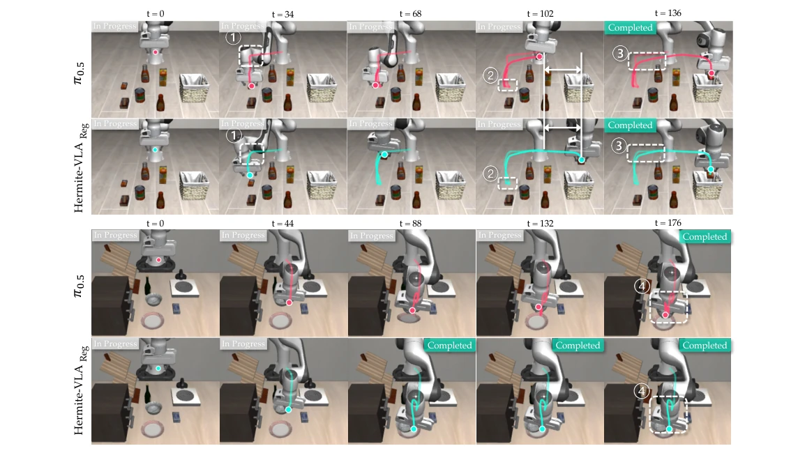
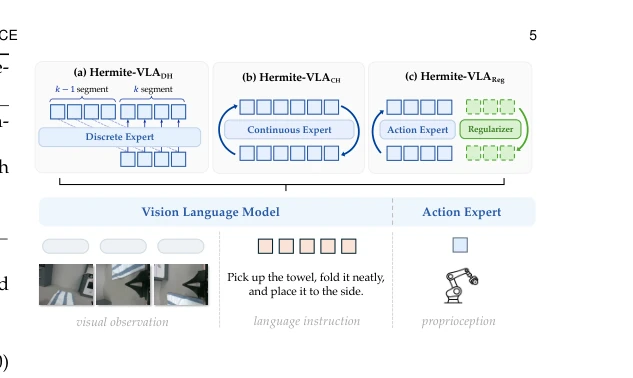
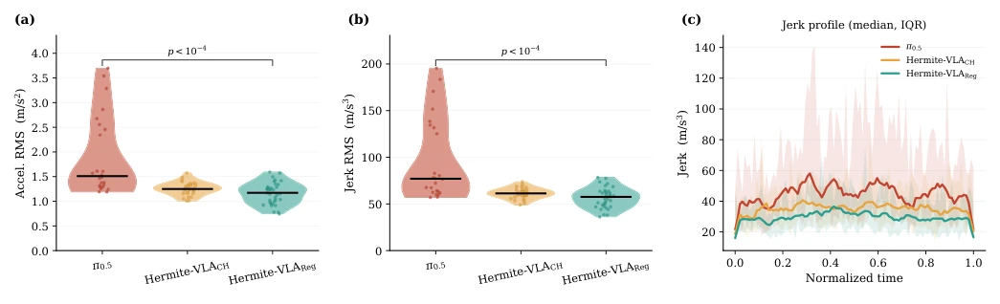
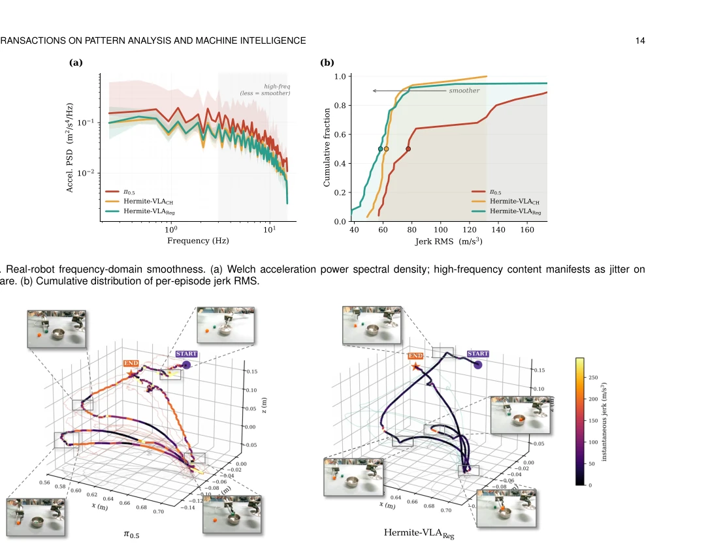
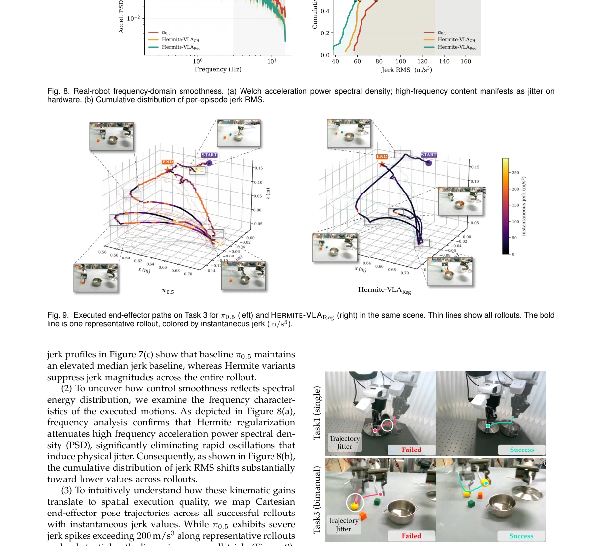

Fig. 2. Hermite encoding of an action chunk. For each segment k, the endpoint positions and velocities θ(k) = (p(k) s , v(k) s , p(k) e , v(k) e ) are extracted from the end-effector chunk, yielding a compact trajectory representation.
Fig. 3. One-sided finite-difference estimation of Hermite endpoint ve- locities. The start and end velocities of segment k are computed from forward and backward differences, respectively, and rescaled by the segment span sk.

Fig. 6. Per-step jerk magnitude ∥jerkxyz(t)∥along one LIBERO-10 episode that π0.5 (top) and HERMITE-VLAReg (bottom) both complete from the same initial state. Shaded bands mark the jerk spikes of π0.5, reproduced at the same positions in both panels.
Fig. 8. Real-robot frequency-domain smoothness. (a) Welch acceleration power spectral density; high-frequency content manifests as jitter on hardware. (b) Cumulative distribution of per-episode jerk RMS.

Fig. 11. Qualitative comparison of end-effector trajectories in simulation. The π0.5 baseline exhibits local oscillations, abrupt corrections, and longer paths during object approach and placement, as highlighted by the numbered regions. Hermite Regularization produces smoother and more direct trajectories and reaches successful task completion earlier.
其他图片Other Figures

Fig. 4. Three instantiations of the Hermite trajectory prior. (a) Her- mite Token (HERMITE-VLADH) tokenizes the boundary variables and decodes them segment by segment. (b) Hermite Scaffold (HERMITE- VLACH) decomposes each clean-action estimate into a Hermite scaf- fold and per-timestep residuals at every step of the flow matching ODE. (c) Hermite Regularization (HERMITE-VLAReg) attaches a training-only auxiliary Hermite head that shapes the shared features and is discarded at inference.

Fig. 7. Episode-level smoothness on the real robot. (a) Acceleration RMS and (b) jerk RMS per episode. Both Hermite variants are significantly smoother than π0.5 (p < 10−4). (c) Median jerk over normalized episode time with inter-quartile band: π0.5 is the highest with the widest spread, HERMITE-VLAReg the lowest and most consistent.

Fig. 9. Executed end-effector paths on Task 3 for π0.5 (left) and HERMITE-VLAReg (right) in the same scene. Thin lines show all rollouts. The bold line is one representative rollout, colored by instantaneous jerk (m/s3).

Fig. 10. Effect of trajectory regularity on real-robot tasks. π0.5 (left) exhibits end-effector jitter near the object, perturbing the gripper–object alignment and resulting in failed grasps in both single-arm and bimanual tasks. HERMITE-VLAReg (right) produces a smoother approach trajec- tory, maintains stable alignment before contact and move successfully.